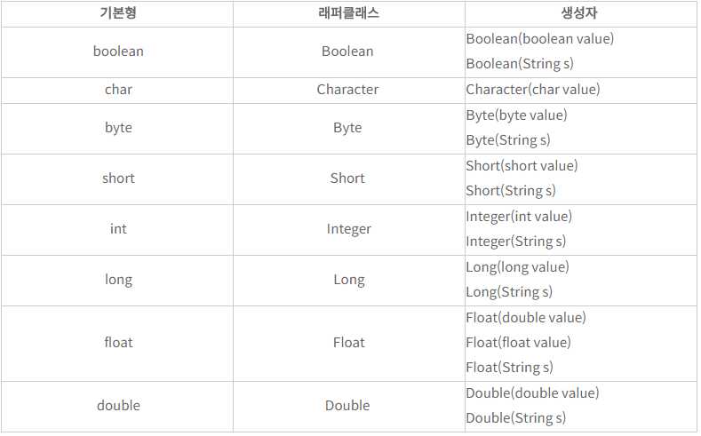

래퍼 클래스(Wrapper Class)란?
래퍼 클래스는 객체 지향 언어에서 기본적으로 제공하는 타입들(primitive type, 기본형 타입)을 객체의 형태로 사용해야 할 때 사용하는 클래스이다.
 위 표는 자바에서 사용되는 기본형 타입과 그 것과 연결되는 래퍼 클래스들을 보여준다.
대부분의 블로그를 보면 래퍼 클래스가 쓰이는 곳은 [객체형을 사용해야할 때 사용한다]라고는 나와있지만 사용한 예시가 나와있는 블로그는 드물다.
래퍼 클래스가 사용되는 예시를 보면
- Character 클래스의 경우 안에 저장되어있는 문자열의 길이를 구하거나, 모든 글자를 대문자(또는 소문자)로 바꾸는 작업을 편리하게 해주는 메소드를 이용할 때 사용할 수 있다.
- 자바에서 제너릭을 사용할 때 <>안에는 기본형 타입들을 넣을 수 없다. 이때 래퍼 클래스를 사용한다.
=> <int> 는 사용할 수 없으며 <Integer>는 사용할 수 있다. - 오버라이딩 할때에 부모 메소드의 반환형을 상속한 다른 반환형을 사용할 수 있다. 여기서 또한 기본형은 사용하지 못한다. int는 클래스가 아니기 때문이다.
class A {
public abstract Object getHi();
}
class B extends A {
public Integer getHi() { return 1; };
} - 래퍼 클래스의 메소드를 사용함에 있어서 또하나의 팁은 Integer.parseInt의 반환형은 int이며 Integer.valueOf의 반환형은 Integer 이라는 것이다.